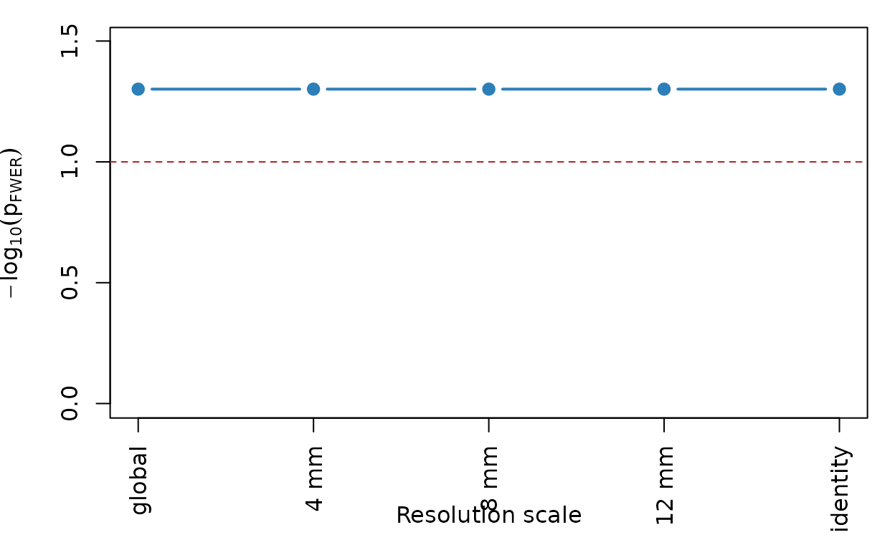
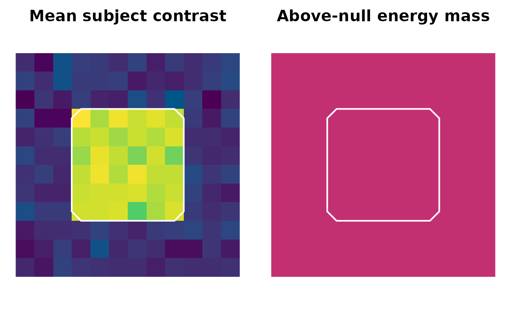

Scale-Space Localized Energy Inference
Source:vignettes/scale-space-localized-energy.Rmd
scale-space-localized-energy.Rmdscale_space_energy() tests a planned statistic map
across a prespecified resolution continuum. The low-level API
deliberately follows the rest of neurothresh: the
inferential engine consumes an observed statistic map plus a calibrated
null generator.
library(neurothresh)
set.seed(1)
dims <- c(12, 12, 12)
signal_mask <- array(FALSE, dims)
signal_mask[4:9, 4:9, 4:9] <- TRUE
subject_images <- replicate(
8,
{
img <- array(rnorm(prod(dims), sd = 0.5), dim = dims)
img[signal_mask] <- img[signal_mask] + 3
img
},
simplify = FALSE
)For a one-sample planned contrast, the raw-image wrapper builds the
group map and deterministic subject-level sign-flip null maps, then
calls the same low-level scanner. The n_perm values used
below are kept tiny so the vignette builds quickly: with
B = 19 permutations the smallest possible corrected p-value
is 1/(B + 1) = 0.05, which is far too coarse for real
analyses. Production runs should use at least
n_perm = 1000, and 5,000 to 10,000 if power is a
concern.
fit <- scale_space_onesample(
subject_images,
scales = scale_space(
fwhm_mm = c(4, 8, 12),
include_global = TRUE,
include_identity = TRUE
),
statistics = list(
local_energy(),
signed_coherence(tail = "two")
),
n_perm = 19,
seed = 1,
alpha = 0.1
)
fit
#> Scale-space localized energy inference
#> permutations: 19
#> channels: local_energy, signed_coherence_two
#> omnibus p_FWER: 0.05
head(summary(fit))
#> scale_index channel_index scale_type fwhm_mm channel min_p
#> 1 1 1 global Inf local_energy 0.05
#> 2 1 2 global Inf signed_coherence_two 0.65
#> 3 2 1 gaussian 4 local_energy 0.05
#> 4 2 2 gaussian 4 signed_coherence_two 0.25
#> 5 3 1 gaussian 8 local_energy 0.05
#> 6 3 2 gaussian 8 signed_coherence_two 0.20
#> max_stat any_supported n_supported effective_basis
#> 1 4.210267 TRUE 1728 1.000
#> 2 3.868120 FALSE 0 1.000
#> 3 4.223925 TRUE 525 27.000
#> 4 4.116158 FALSE 0 27.000
#> 5 4.217390 TRUE 1519 3.375
#> 6 4.127250 FALSE 0 3.375The result controls familywise error over spatial scale, location, and requested statistic channels. The global endpoint is a distributed energy test. The identity endpoint is the voxelwise limit. Intermediate FWHM values ask whether the effect is detectable at that localization scale.
resolution <- plot_resolution_curve(fit)
resolution[, c("scale_type", "fwhm_mm", "channel", "min_p", "any_supported")]
#> scale_type fwhm_mm channel min_p any_supported
#> 1 global Inf local_energy 0.05 TRUE
#> 2 global Inf signed_coherence_two 0.65 FALSE
#> 3 gaussian 4 local_energy 0.05 TRUE
#> 4 gaussian 4 signed_coherence_two 0.25 FALSE
#> 5 gaussian 8 local_energy 0.05 TRUE
#> 6 gaussian 8 signed_coherence_two 0.20 FALSE
#> 7 gaussian 12 local_energy 0.05 TRUE
#> 8 gaussian 12 signed_coherence_two 0.35 FALSE
#> 9 identity 0 local_energy 0.05 TRUE
#> 10 identity 0 signed_coherence_two 0.45 FALSE
Corrected evidence across the localization continuum. Higher values indicate stronger familywise-corrected evidence; the dashed line marks alpha = 0.10.
A corrected point at a scale does not mean each voxel is significant.
It means that a localized test centered at that location and bandwidth
has corrected evidence. For local-energy display, use above-null energy
summaries rather than raw z^2 maps.
mass <- energy_mass_map(fit, scale_index = fit$selected$best$scale_index[1])
range(as.numeric(mass), na.rm = TRUE)
#> [1] 0.0005787037 0.0005787037
The statistic image contains a broad planted effect. The energy-mass map shows where above-null scale-space energy is concentrated at the selected scale.
For two-group analyses, scale_space_twosample() provides
a simple label permutation wrapper. For unbalanced clinical/control data
or models with nuisance covariates, prefer a GLM null generator.
group <- factor(rep(c("control", "case"), each = 4), levels = c("control", "case"))
age <- seq_along(group)
glm_null <- null_glm(
subject_images,
design = ~ group + age,
data = data.frame(group = group, age = age),
contrast = "groupcase",
n_perm = 19,
seed = 2
)
glm_fit <- scale_space_energy(
stat_vol = glm_null$stat_vol,
mask = glm_null$mask,
null_spec = glm_null,
scales = scale_space(c(4, 8), include_global = TRUE, include_identity = TRUE),
statistics = list(local_energy()),
n_perm = 19
)
summary(glm_fit)
#> scale_index channel_index scale_type fwhm_mm channel min_p max_stat
#> 1 1 1 global Inf local_energy 1.0 -0.30861189
#> 2 2 1 gaussian 4 local_energy 1.0 0.94536592
#> 3 3 1 gaussian 8 local_energy 1.0 -0.06587817
#> 4 4 1 identity 0 local_energy 0.8 4.09490015
#> any_supported n_supported effective_basis
#> 1 FALSE 0 1.000
#> 2 FALSE 0 27.000
#> 3 FALSE 0 3.375
#> 4 FALSE 0 1728.000This approach is related to post-statistic spatial filtering methods such as LISA: the same spatial operation is applied to observed and permuted maps before inference. The distinction is that scale-space localized energy inference searches a prespecified resolution family and uses max-null FWER over the full search. It is therefore not smoothing until significance; the smoothing scales are part of the corrected test family.